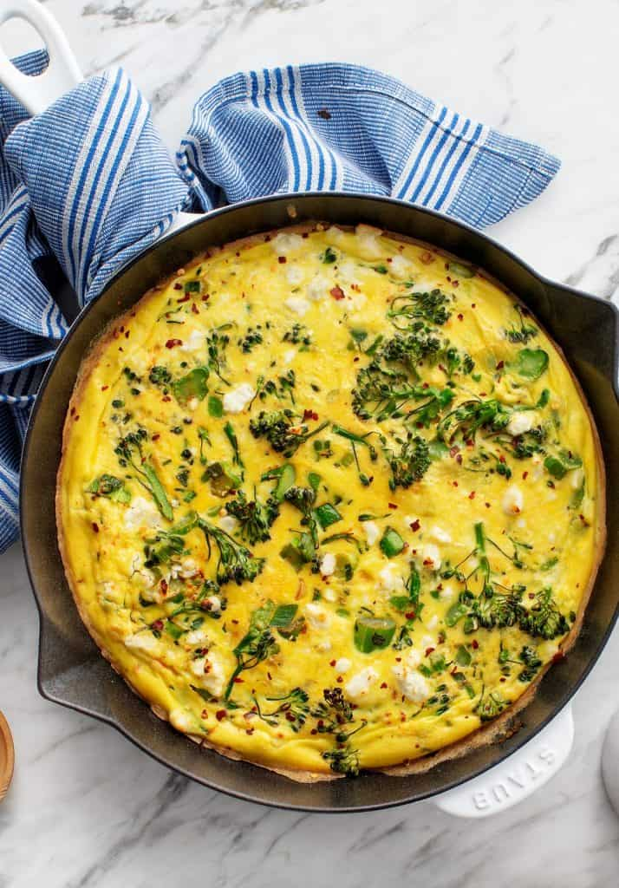

Healthy Breakfast Oats
210–300 calories

How to Make a Frittata
A frittata is my #1 favorite brunch item to make at home. It’s easy and versatile, so I thought with Easter coming up this weekend, you may like a frittata recipe idea… or five! I usually make my frittatas with whatever vegetables I have on hand, which means that I’ve tried a whole bunch of various combinations over the years. Below are a few of my favorites along with some tips.
First things first though, you may be asking… what is a frittata? Some call a frittata a crustless quiche (although, I call a quiche a crust-full frittata). It’s an egg-bake filled with yummy vegetables, herbs, and a bit of cheese. If you’re not a savory breakfast person, it’s a quick weeknight dinner option.
- Choose a recipe variation below, and start by whisking together the frittata base: a simple mixture of eggs, almond milk (or any milk), garlic, salt, and pepper.
- Then, sauté your veggies in a 10 or 12-inch cast iron skillet just until tender.
- When the veggies are ready, stir in any spices or herbs before adding the eggs. Pour in the frittata base, and shake the pan gently to distribute it among the vegetables.
- Sprinkle your frittata with cheese and transfer the pan to a 400-degree oven..
- Bake for 15 to 20 minutes, or until the eggs are set and the top is lightly golden around the edges.
- Allow the frittata to cool slightly before slicing and devouring!
Frittata Tips
- Spread your veggies evenly throughout the pan before pouring in the eggs –Once you pour the egg mixture in, you won’t be moving the vegetables around much (or you’d end up with scrambled eggs!), so make sure the veggies are spaced evenly in the pan to get a final frittata with veggies in every bite.
- Change it up! – Play around with these flavor combinations. If you try swapping in different herbs or vegetables, keep in mind that a good veggie:egg ratio is about 1/4 cup of veggies per egg, or 2 heaping cups of vegetables for 6-8 eggs.
- Use a cast-iron skillet – The best choice for making frittatas, cast iron skillets can safely go from stovetop to oven, and they conduct heat well and evenly. Seasoning a cast-iron pan gives it a non-stick quality, so a well-seasoned skillet will result in the easiest slicing & serving. I like to use an enameled cast iron skillet, which does not require any pre-seasoning. If you don’t have a skillet, go make this breakfast casserole recipe instead.
- Safety first! – Don’t forget that when the cast iron skillet comes out of the oven, the handle will remain hot for a while – I’ve learned this the hard way multiple times. Place a kitchen towel on it to remind yourself not to grab it before it cools off. You can also get one of these silicone handle covers.
If you’re serving your frittata as part of a bigger brunch, mimosas, classic french toast, banana bread, pancakes or muffins, French toast, baked oatmeal, overnight oats, blueberry scones, or fruit salad would all be great choices to go with it.
To dress up individual slices, top them with additional fresh herbs or serve with sliced avocado, dollops of lemony yogurt, or scoops of pesto, pico de gallo or tomatillo salsa.
For a weeknight dinner, I like to serve my frittata with a kale salad and some good bread.